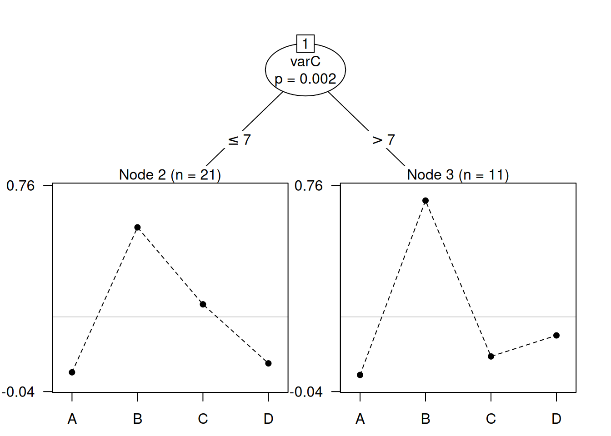

Plackett-Luce Models with Item Covariates
Heather Turner
Department of Statistics, University of Warwick, UKSource:
vignettes/PLADMM.Rmd
PLADMM.Rmd1 Introduction
The main model-fitting function in the PlackettLuce package, PlackettLuce,
directly models the worth of items with a separate parameter estimate for
each item (see Introduction to PlackettLuce). This vignette
introduces a new function, pladmm, that models the log-worth of
items by a linear function of item covariates. This functionality is under
development and provided for experimental use - the user interface is likely
to change in upcoming versions of PlackettLuce.
pladmm supports partial rankings, but otherwise has limited functionality
compared to PlackettLuce. In particular, ties, pseudo-rankings, prior
information on log-worths, and ranker adherence parameters are not supported.
2 Plackett-Luce model with item covariates
The standard Plackett-Luce model specifies the probability of a ranking of \(J\) items, \({i_1 \succ \ldots \succ i_J}\), is given by
\[\prod_{j=1}^J \frac{\alpha_{i_j}}{\sum_{i \in A_j} \alpha_i}\]
where \(\alpha_{i_j}\) represents the worth of item \(i_j\) and \(A_j\) is the set of alternatives \(\{i_j, i_{j + 1}, \ldots, i_J\}\) from which item \(i_j\) is chosen.
pladmm models the log-worth as a linear function of item covariates:
\[\log \alpha_i = \beta_0 + \beta_1 x_{i1} + \ldots + \beta_p x_{ip}\]
where \(\beta_0\) is fixed by the constraint that \(\sum_i \alpha_i = 1\). The
parameters are estimated using an Alternating Directions Method of Multipliers
(ADMM) algorithm proposed by (Yildiz et al. 2020), hence the name pladmm.
ADMM alternates between estimating the worths \(\alpha_i\) and the linear coefficients \(\beta_k\), encapsulating them in a quadratic penalty on the likelihood:
\[L(\boldsymbol{\beta}, \boldsymbol{\alpha}, \boldsymbol{u}) = \mathcal{L}(\mathcal{D}|\boldsymbol{\alpha}) + \frac{\rho}{2}||\boldsymbol{X}\boldsymbol{\beta} - \log \boldsymbol{\alpha} + \boldsymbol{u}||^2_2 - \frac{\rho}{2}||\boldsymbol{u}||^2_2\] where \(\boldsymbol{u}\) is a dual variable that imposes the equality constraints (so that \(\log \boldsymbol{\alpha}\) converges to \(\boldsymbol{X}\boldsymbol{\beta}\)).
3 Salad Data
We shall illustrate the use of pladmm with a classic data set presented by
(Critchlow and Fligner 1991) that is provided as the salad data set in PlackettLuce.
The data are 32 full rankings of 4 salad dressings
(A, B, C, D) by tartness, with 1 being the most tart and 4 being the least
tart, according to the ranker.
library(PlackettLuce)
head(salad, 4)## A B C D
## 1 1 2 3 4
## 2 1 2 3 4
## 3 2 1 3 4
## 4 2 1 4 3The salad dressings were made with known quantities of acetic acid and gluconic acid, as specified in the following data frame:
features <- data.frame(salad = LETTERS[1:4],
acetic = c(0.5, 0.5, 1, 0),
gluconic = c(0, 10, 0, 10))3.1 Standard Plackett-Luce model
We begin by using pladmm to fit a standard Plackett-Luce model, with a
separate parameter for each salad dressing. The first three arguments are the
rankings (a matrix or rankings object), a formula specifying the model for
the log-worth (must include an intercept) and a data frame of item features
containing variables in the model formula. rho is the penalty parameter
determining the strength of penalty on the log-likelihood. As a rule of thumb,
rho should be ~10% of the fitted log-likelihood.
## Call: pladmm(rankings = salad, formula = ~salad, data = features, rho = 8)
##
## Coefficients:
## Estimate Std. Error z value Pr(>|z|)
## (Intercept) -3.1740 NA NA NA
## saladB 2.7305 0.4481 6.093 1.11e-09 ***
## saladC 1.5621 0.3965 3.939 8.17e-05 ***
## saladD 1.0275 0.3771 2.725 0.00644 **
## ---
## Signif. codes: 0 '***' 0.001 '**' 0.01 '*' 0.05 '.' 0.1 ' ' 1
##
## Residual deviance: 152.83 on 189 degrees of freedom
## AIC: 158.83
## Number of iterations: 7In this case, the intercept represents the log-worth of salad dressing A, which is fixed by the constraint that the worths sum to 1.
## [1] 1The remaining coefficients are the difference in log-worth between each salad
dressing and salad dressing A. We can compare this to the results from
PlackettLuce, which sets the log-worth of salad dressing A to zero:
standardPL_PlackettLuce <- PlackettLuce(salad, npseudo = 0)
summary(standardPL_PlackettLuce)## Call: PlackettLuce(rankings = salad, npseudo = 0)
##
## Coefficients:
## Estimate Std. Error z value Pr(>|z|)
## A 0.0000 NA NA NA
## B 2.7299 0.4481 6.093 1.11e-09 ***
## C 1.5615 0.3965 3.939 8.20e-05 ***
## D 1.0268 0.3771 2.723 0.00646 **
## ---
## Signif. codes: 0 '***' 0.001 '**' 0.01 '*' 0.05 '.' 0.1 ' ' 1
##
## Residual deviance: 152.83 on 189 degrees of freedom
## AIC: 158.83
## Number of iterations: 6The differences in log-worth are the same to ~3 decimal places. We can improve
the accuracy of pladmm by reducing rtol (by default 1e-4):
## Call: pladmm(rankings = salad, formula = ~salad, data = features, rho = 8,
## rtol = 1e-06)
##
## Coefficients:
## Estimate Std. Error z value Pr(>|z|)
## (Intercept) -3.1735 NA NA NA
## saladB 2.7299 0.4481 6.093 1.11e-09 ***
## saladC 1.5615 0.3965 3.939 8.20e-05 ***
## saladD 1.0268 0.3771 2.723 0.00646 **
## ---
## Signif. codes: 0 '***' 0.001 '**' 0.01 '*' 0.05 '.' 0.1 ' ' 1
##
## Residual deviance: 152.83 on 189 degrees of freedom
## AIC: 158.83
## Number of iterations: 17The itempar function can be used to obtain the worth estimates, e.g.
itempar(standardPL)## Item response item parameters (PLADMM):
## A B C D
## 0.04186 0.64176 0.19950 0.116883.2 Plackett-Luce model with item covariates
To model the log-worth by item covariates, we simply update the model formula:
## Call: pladmm(rankings = salad, formula = ~acetic + gluconic, data = features,
## rho = 8)
##
## Coefficients:
## Estimate Std. Error z value Pr(>|z|)
## (Intercept) -4.84097 NA NA NA
## acetic 3.27431 0.57650 5.680 1.35e-08 ***
## gluconic 0.27392 0.04505 6.081 1.20e-09 ***
## ---
## Signif. codes: 0 '***' 0.001 '**' 0.01 '*' 0.05 '.' 0.1 ' ' 1
##
## Residual deviance: 152.9 on 190 degrees of freedom
## AIC: 156.9
## Number of iterations: 14The model uses one less degree of freedom, but there is only a slight increase in the deviance, that is not significant:
anova(standardPL, regressionPL)## Analysis of Deviance Table
##
## Model 1: ~salad
## Model 2: ~acetic + gluconic
## Resid. Df Resid. Dev Df Deviance Pr(>Chi)
## 1 189 152.83
## 2 190 152.91 1 0.074411 0.785So it is sufficient to model the log-worth by the concentration of acetic and gluconic acids.
An advantage of modelling log-worth by covariates is that we can predict the log-worth for new items. For example, suppose we have salad dressings with the following features:
features2 <- data.frame(salad = LETTERS[5:6],
acetic = c(0.5, 0),
gluconic = c(5, 5))the predicted log-worth is given by
predict(regressionPL, features2)## 1 2
## -1.834198 -3.471352Note that the names in features2$salad are unused as salad was not a
variable in the model. The predicted log-worths have the same location as the
original fitted values
fitted(regressionPL)## A B C D
## -3.2038115 -0.4645852 -1.5666574 -2.1017393i.e. they are contrasts with the log-worth of salad dressing A. If we want
to express the predictions as a new set of constrained item parameters, we
can specify type = "itempar" (vs the default type = "lp" for
linear predictor). The
parameterization can then be specified by passing arguments on to itempar(),
e.g. the following will compute the predicted worths constrained to sum to 1:
predict(regressionPL, features2, type = "itempar", log = FALSE, ref = NULL)## 1 2
## 0.8371473 0.1628527Standard errors can optionally be returned, by specifying se.fit = TRUE
predict(regressionPL, features2, type = "itempar", log = FALSE, ref = NULL,
se.fit = TRUE)## $fit
## 1 2
## 0.8371473 0.1628527
##
## $se.fit
## 1 2
## 0.03929727 0.039297273.3 Plackett-Luce tree with item covariates
The Plackett-Luce model with item covariates can also be used in model-based partitioning. To illustrate, we shall simulate some covariate data for the judges that ranked the four salads, based on their ranking of salad C
set.seed(1)
judge_features <- data.frame(varC = rpois(nrow(salad), lambda = salad$C^2))This simulates the scenario where some characteristic of the judge affects how they rank salad C, so we expect the item worth to depend on this variable.
Now we group the rankings by judge in preparation to fit a Plackett-Luce tree:
grouped_salad <- group(as.rankings(salad), 1:nrow(salad))We specify the Plackett-Luce tree to partition the grouped rankings by any of
the judge features (grouped_salad ~ .), with the log-worth of the salads
modelled by a linear function of the acetic and gluconic acid concentrations
(~acetic + gluconic). The corresponding variables are found in data, which
should be a list of two data frames, the first containing the group covariates
and the second containing the item covariates. We set a minimum group size of
10 and reduce the rho parameter accordingly.
tree <- pltree(grouped_salad ~ .,
worth = ~acetic + gluconic,
data = list(judge_features, features),
rho = 2, minsize = 10)
plot(tree, ylines = 2)
The result is a tree with two nodes; both groups prefer salad B, but the first group (varC ≤ 7) places salad C in second place, while the second group (varC > 7) prefer salad D. This is as we might expect, since we simulated the judge covariate varC to correlate with the ranking of C, so a higher value of this variable correlates to a lower preference for C. We can see the difference in the coefficients of the item features:
tree## Plackett-Luce tree
##
## Model formula:
## grouped_salad ~ .
##
## Fitted party:
## [1] root
## | [2] varC <= 7: n = 21
## | (Intercept) acetic gluconic
## | -5.5121162 4.3035356 0.2845096
## | [3] varC > 7: n = 11
## | (Intercept) acetic gluconic
## | -5.0821780 2.7423782 0.3355964
##
## Number of inner nodes: 1
## Number of terminal nodes: 2
## Number of parameters per node: 3
## Objective function (negative log-likelihood): 71.40774From the first group to the second group, the coefficient for acetic acid concentration reduces from 4.3 to 2.7. Since the acetic acid concentration for salad C is 1, with 0 gluconic acid, this reduces the worth of salad C in the second group. At the same time, the coefficient for gluconic acid concentration increases 0.28 to 0.34 between the first and second groups. Since the gluconic acid concentration for salad D is 1, with 0 acetic acid, this increases the worth of salad D in the second group.
4 Cautionary notes
The PLADMM algorithm should in theory converge to the maximum likelihood
estimates for the parameters. However, the algorithm may not behave well if the
rankings are very sparse or if the penalty parameter rho is not set to a
suitable value. Currently, pladmm does not provide checks/warnings to assist
the user the validate the result. It is recommended that the standard
Plackett-Luce model is fitted initially to give a reference of the expected
log-likelihood and item parameters - pladmm should give broadly similar
results.
pladmm also returns two estimates of the worths. The first set are the direct
estimates from the last iteration of ADMM:
regressionPL$pi## A B C D
## 0.04061305 0.62842986 0.20872416 0.12223294The second set are the estimates given by the estimates of \(\boldsymbol{\beta}\) from the last iteration:
regressionPL$tilde_pi## A B C D
## 0.04060714 0.62839568 0.20874175 0.12224363These two sets of estimates should be approximately the same (but being approximately the same does not guarantee the solution is the global optimum).